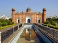
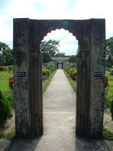
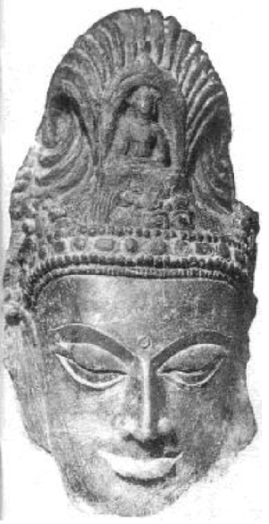
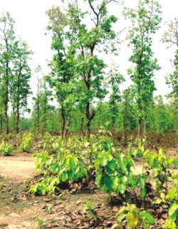
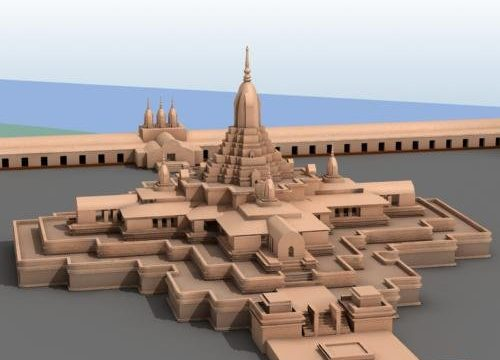
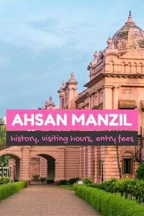

| Home | Transport List | Seat Booking Form | Link of Travels | Contact us |





TRAVEL BANGLADESH (TRAVELBD) is a tour operator & tourism information power house specialized in travels and expeditions in Bangladesh. It is located in the heart of Bangladesh in the city of Dhaka, the capital of the Bangladesh. This specific location gives us two advantages: We keep updating our travel proposals with a sound knowledge of the area: Travel bookings bangladesh, tours bangladesh,travel plans bangladesh,travel information bangladesh, hotel booking bangladesh,hotels packages for bangladesh, budget travel bangladesh,visit bangladesh, trekking tours bangladesh,adventure tours bangladesh, beach tours bangladesh, bangladesh expeditions. We take advantage of the place as an effective logistics platform for all the expeditions we organized in the country. Bangladesh is very famous for its green mountains and numerous lakes and rivers. Many places, where nature has remained in its original form, will provide you with a unique experience for travelers interested in nature sports, wildlife discovery and fishing games. Throughout all our tours you will experience the Bangladeshi culture, customs and rituals of which have been preserved over the centuries.
Historical Place of Bangladesh
1. Lalbagh Fort in Dhaka 2. Kotila Mura in Comilla 3. Somapura Mahavira at Naogaon 4. Shalban Vihar at Comilla 5. Ahsan Manzil at Dhaka 6. Mahasthangarh in Bogra
Lalbagh Fort in Dhaka
This famous historic place is situated on the northeast side of Dhaka, Bangladesh. This was built during the Mughal rule, on seventeenth century. Lalbagh fort is believed to be an incomplete Mughal fort structure which was started in 1678 AD by the Mughal Subahdar Muhammad Azam Shah. As the structure applies to the fine architectural work of that period, it has four main structures which are a Diwan-i-Aam, a water tank in its eastern side, the tomb of Bibi Pari and the Lalbagh Fort Mosque. During the nineteenth century, this fort grew up to be a place of revolution by the local soldiers, against the colonial British rule. The best time to visit this place is November to March, a little wintery environment, paints colors to the fort and its lush green garden.
Kotila Mura in Comilla
This is one of the sacred Buddhist places and one of the fifth spots amongst the Mainamati ruins. This is believed to be done on 600 AD. Kotila Mura is situated in Comilla, Bangladesh.This old historic place is situated on a flattened hillock and has three structures of Buddhist stupas. The three shrines are believed to be the three jewels of Buddhism, the Dharma, Sangha, and the Buddha. The only way to the shrine is through the east, a gateway which leads to a huge hall. This authentic Buddhist structure was active from the seventh century to the thirteenth century.
Somapura Mahavira at Naogaon
This monastery has a top position in world history for its polished and gigantic architectural work. Each side of the monastery measures 900ft in length and is constructed of monk’s cells. There are 172 such cells and 92 altars of worship. There is a courtyard inside that containing the remains of the ancient Buddhist stupa. This is amongst those few monasteries that has survived the Muslim invasion.The enormous quadrangular structure stands with pride, and remains a heritage site for the visitors of Bangladesh.
Shalban Vihar at Comilla
This is one amongst the Buddhist sites of the Mainamati ruins. It is read that Mainamati had been a Buddhist center between seventh and twelfth century. This site was built during the reign of Deva Dynasty, by Bhava Deva, the fourth ruler. The authentic color of the building is flame like and was able to be the dwelling place of 115 monks together. It was previously known as Shalban Rajar Bari, but after the archaeological survey, the had been known as a Buddhist Monastery. When the excavation of terracotta and copper art work was discovered, it was then named as Shalban Vihar. It is one amongst the prestigious Buddhist Monasteries that had a glorious presence from the early eighth century. Some valuable excavation from this place are kept in the Mainamati Museum.
Ahsan Manzil at Dhaka
This is the heritage building of the then jamindar of Jamalpur. It was built during the late eighteenth century by Sheik Enayet Ullah. It was built on a huge area covering a summer house for Sheik Enayet Ullah. The son of Sheik Enayet Ullah sold this marvellous property to the French traders. The French got defeated and the English took power of all the properties, once reigned by the French. The old French building was then reconstructed to two stories building by Ahsanullah, keeping similarity to the ‘Rangmahal’. The doom was a part of the reconstruction of this mahal and then came to be known as ‘Ahsan Manzil’. This palace is situated on the bank of the river Buriganga. It is a beautiful, serene and tranquil place that keeps you away from the sultry summer heat.
Mahasthangarh in Bogra
It is the most ancient urban archaeological structure of Bangladesh, at the bank of river Karatoya. There is evidence that says this place existed during the third century during the reign of Pundravardhana. This place is believed to be the capital of Pundravardhana. The fortified centre of the city is rectangular in shape. There are now several hillocks and structural ruins inside the area. Of these, the Jiat Kunda, Mankalir Dhap (place sacred to Mankali), Parasuramer Basgriha (palace of Parasuram), Bairagir Bhita ,Khodar Pathar Bhita, etc. are remarkable. But the most important evidence of this place is a limestone piece, bearing six lines in Prakrit in Brahmi script. This is the oldest and medieval ruins of the period, containing the rich culture of the place of early era.
Music Player




 |
 |
 |